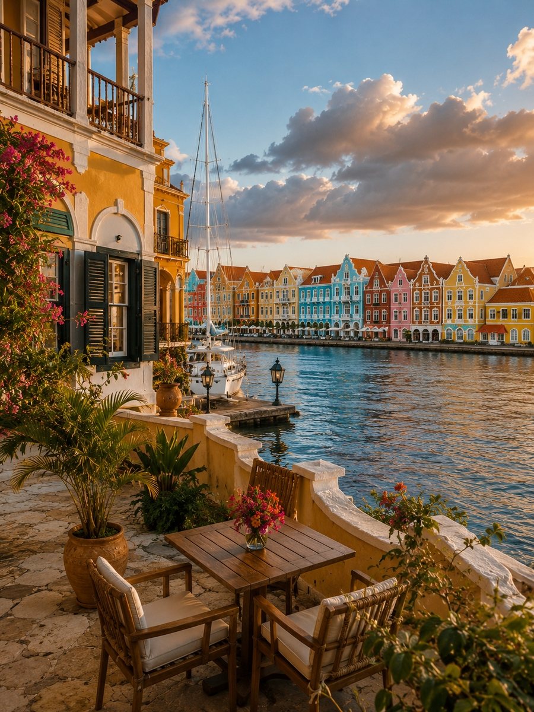
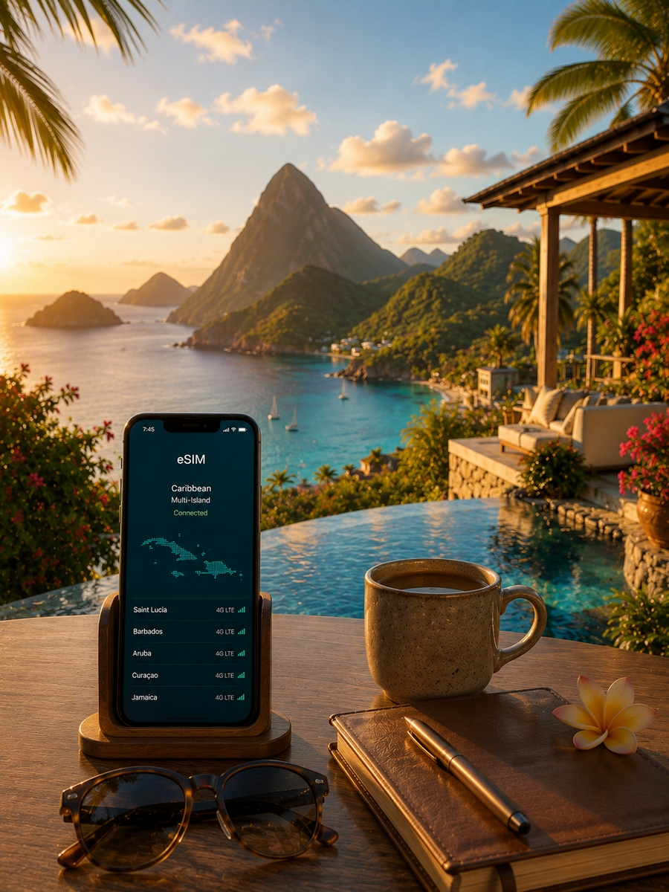

Picking a resort before choosing the right island
Jamaica, Aruba, the Bahamas and the Dominican Republic deliver completely different costs, flights and daily rhythms. Match the island before the hotel.
→ Compare Caribbean islands
Plan your Caribbean getaway with confidence. Compare the Dominican Republic, Jamaica, Aruba, Bahamas, and other stunning islands, then use our hotel, flights, eSIM, budget and travel guides to plan every step.
Editorial note: this hub points you to Travel Radar LK guides first. Some linked article pages may contain affiliate links, clearly marked where relevant.
Choose the planning problem that worries you most, then jump to the guide or next step that fits.
This is a guided shortcut, not a chatbot: pick one travel problem and we'll point you to the right next step.
Select a scenario on the left to see what to read and do first.
Choose the island before the hotel
The Bahamas, Jamaica, the Dominican Republic, and Saint Lucia can look similar in brochures, but they offer completely different cultures, landscapes, and travel logistics. The destination decision must come before the hotel search.
Next step: Compare islands first using the map below, then search for accommodations.
The hotel choice matters less than choosing the right island. Each destination creates a different trip.
Schematic region map, not exact geography.
Tap an island group on the map to see what it does best — and what to watch out for before booking.
Sequence matters. Lock the destination and hotel first — then stack the supporting services around that decision.



The Dominican Republic and Jamaica offer endless all-inclusive resorts with direct beach access. Aruba and Curaçao deliver unique desert landscapes and vibrant Dutch architecture. Saint Lucia and Antigua trade mega-resort convenience for dramatic volcanic scenery, intimate boutique hotels, and unparalleled romance.
Choose the island vibe first, then search hotels filtered to that specific aesthetic. Don't work backwards from a single photo.

On smaller islands like Barbados or Turks and Caicos, your resort might be a quick 15-minute drive from the airport. On larger islands like Puerto Rico or Jamaica, reaching your coastal retreat can take over 90 minutes. A long transfer on arrival day after a transatlantic flight changes the trip feel significantly.
Book your ground transport after confirming the hotel — not before. Some luxury resorts include boat or helicopter transfers.

An eSIM covering the Caribbean region means maps, hotel confirmations, and transport apps work from the first minute you land in Nassau, San Juan, or Bridgetown. No airport SIM counter queues.
Regional Caribbean eSIMs often cover multiple islands, which is perfect for cruise passengers and island hoppers.

Private clinics on Caribbean islands are expensive, and severe cases often require medical evacuation to the mainland US. A solid policy with $100,000+ medical coverage and medevac is the calm baseline. If you're sailing, diving, or kitesurfing, verify that these specific activities are covered.
Keep the policy number and emergency assistance phone number offline — not only in email.

Swimming with pigs in the Bahamas, exploring the Pitons in Saint Lucia, or diving the reef in Grand Cayman sell out during high season. Check cruise ship schedules before you book: popular spots get overwhelmed when multiple mega-ships are in port.
Choose by group size, departure point, and eco-certifications — not only by photo or price.

Major hubs like San Juan (SJU) and Punta Cana (PUJ) offer direct flights globally, while reaching smaller gems like Grenada or Saint Vincent often requires regional connections. Flight prices shift significantly by date and island — flexibility can save hundreds of dollars.
Long connections in Miami or Panama can make a cheap ticket feel much more expensive. Check total travel time, not just fare.
Each cluster targets a specific decision moment in the planning process — starting with the guides already live.
These six planning errors explain most post-trip regrets across island resorts, multi-stop routes and cruises.
Jamaica, Aruba, the Bahamas and the Dominican Republic deliver completely different costs, flights and daily rhythms. Match the island before the hotel.
→ Compare Caribbean islandsRoom-only island rates hide steep taxes, service charges, dining bills and 90-minute airport drives. Five quick checks protect your real total.
→ Read Caribbean hotel checklistRandom island pairs rarely have direct flights or ferries. Stick to sheltered ferry clusters or proven short-hop corridors.
→ Plan island hopping properlyAugust–October brings storm risk to northern islands, while Aruba, Bonaire and Curaçao sit south in a dry trade-wind belt.
→ Explore the ABC IslandsMontego Bay, Negril and Ocho Rios sit hours apart on Highway A1. Staying on the wrong coast turns day trips into six-hour road marathons.
→ Compare Jamaica's regionsCrossing island telecom zones or leaving data on at sea quickly triggers $12–$20/day bills. Set up a regional or cruise-capable eSIM before departure.
→ Compare Caribbean eSIMsThree recommended first reads